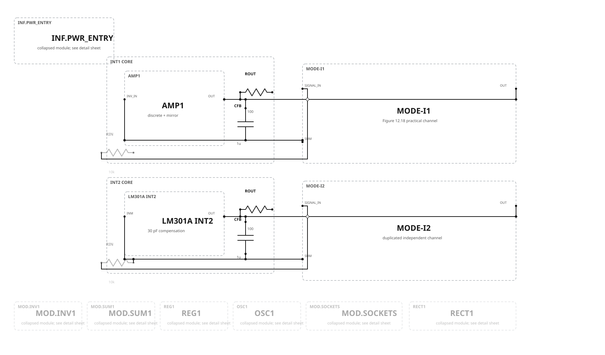
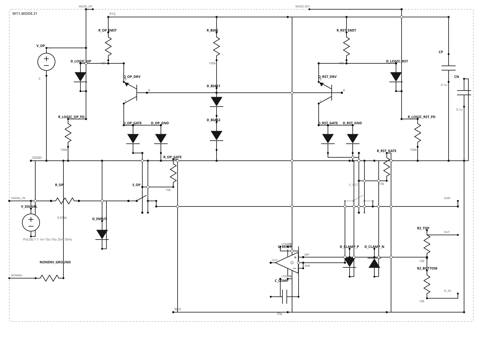
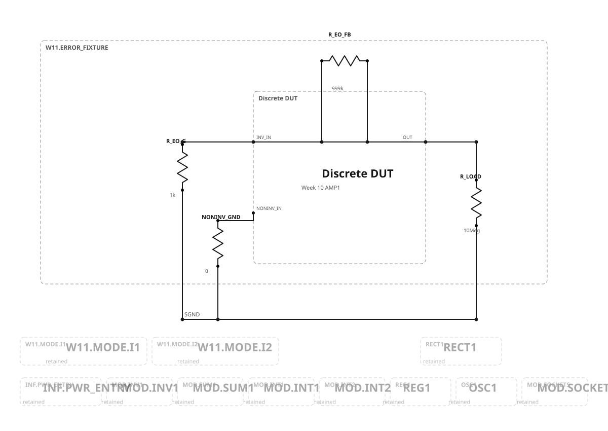
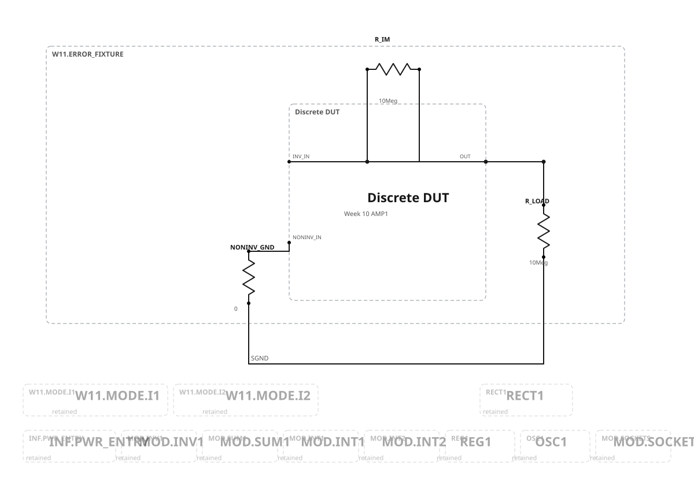
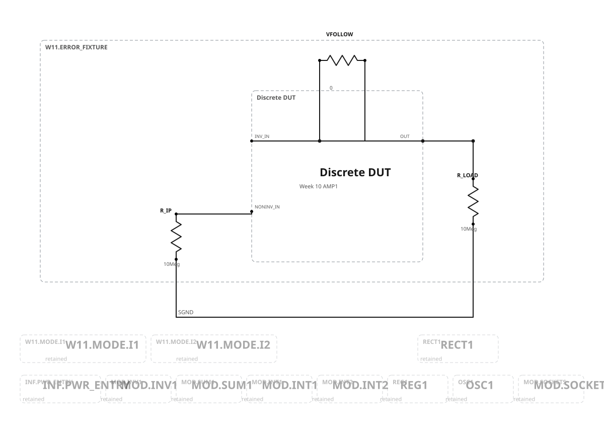
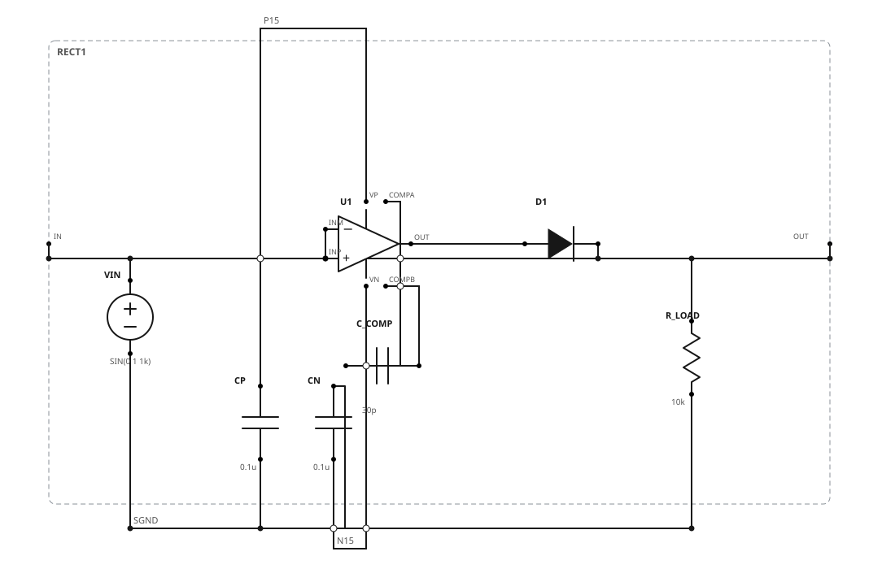

fig-11.18.png depicts Figure 11.19 and is explicitly rejected as Week 11 authority.Dual three-mode integrators
The three sheets share one permanent circuit. Only switch and fixture states differ. The old direct input resistors remain installed but disconnected; the existing 1 µF feedback capacitors remain active.


| Mode | Operate | Reset | Outcome |
|---|---|---|---|
| OPERATE | closed/high | open/low | Integrate input |
| RESET | open/low | closed/high | Drive output toward −VIC |
| HOLD | open/low | open/low | Retain capacitor charge |
| Forbidden | closed/high | closed/high | Never generated; require break-before-make sequencing |
Discrete-amplifier error measurements
These are three separate Figure 11.2 wirings, not one combined circuit. Measure EO first, then correct the two bias-current results for the separately measured offset.



Permanent precision rectifier
The source-correct Figure 11.18 circuit has one series diode, feedback sensed after that diode, and a 10 kΩ ground-referenced load. It is not the Figure 11.19 floating bridge.

Gate and review decision
Approval accepts the seven electrical configurations, the Figure 11.18 correction, the selected provisional values, and the presentation. It does not approve measured performance or insert anything into the capstone.
| Gate | Status | Meaning |
|---|---|---|
| Graph/schema | PASS | Strict W10→W11 addition; retained hardware states explicit |
| SVG/SPICE connectivity | PASS | All eight published pairs agree pin-for-pin and net-for-net |
| Visual inspection | PASS | Main, detail, error, and rectifier sheets inspected after regeneration |
| Ideal/realistic performance | BLOCKED | Week 9/10 failures plus unbound switch/leakage/error models remain open |
Canonical authority: Week 11 graph. Protocol: case manifest. Decision: production record. Deferred projects remain unchanged: patch-cord drawings, separate permanent-infrastructure sheets, Figure 11.19 bridge, and the separate low-voltage redesign.